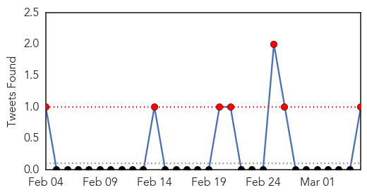
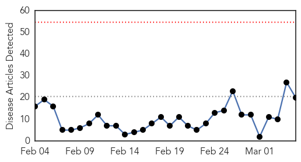
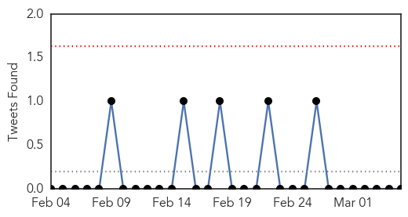
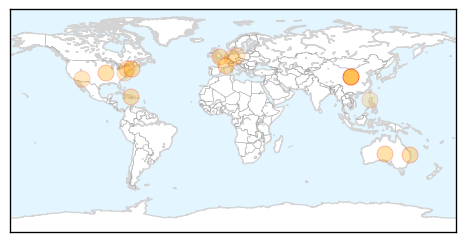
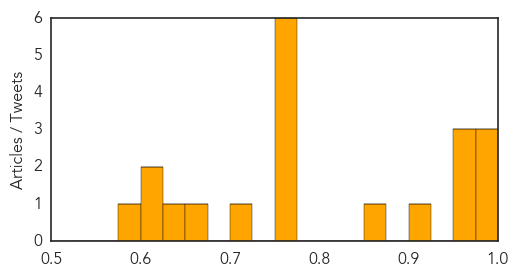

MERS
30-Day Web Trend
18 alerts, 3 warnings

30-Day Twitter Trend
7 alerts, 0 warnings

Article Locations

Article Confidences

Top Articles:
Top Tweets:
- 0.809
- RT: Preparedness to outbreak is crucial at Primary care level and EDs.. MERS-Cov coronavirus
Influenza
30-Day Web Trend
0 alerts, 0 warnings

30-Day Twitter Trend
0 alerts, 0 warnings

Article Locations
Article Confidences
Top Articles:
- 0.990
- Researchers search for next influenza strain
- 0.989
- HCWs with influenza may not present with fever
- 0.986
- Vaccine for deadly flu delayed
- 0.969
- Flu epidemic leaves French hospitals in crisis
- 0.967
- State lifts declaration of widespread flu
- 0.966
- Flu shots delayed a month in Queensland in bid to fight influenza
- 0.913
- Why epidemiology in the age of Dr Google is nothing to sneeze at
- 0.869
- Adults only catch genuine influenza ‘every five years’, say researchers
- 0.773
- Adults only catch flu around twice a decade
- 0.769
- Study Adults Only Catch Flu Around Twice a Decade
- 0.756
- New Study Says Adults May Only Be Able to Get the Flu Twice a Decade
- 0.751
- March 4, 2015 Archives
- 0.751
- March 4, 2015 Archives
- 0.751
- March 4, 2015 Archives
- 0.721
- ER crowding levels at Halifax hospital called critical
- 0.665
- Two avian influenza quarantines lifted in Okanogan county
- 0.630
- Influenza costs Germany billions of euros
- 0.618
- Germany?s influenza fight could cost billions of euros
- 0.605
- Influenza costs Germany billions of euros - Xinhua
- 0.598
- DA bans poultry imports from California
Top Tweets:
-
No tweets found for Mar 05, 2015